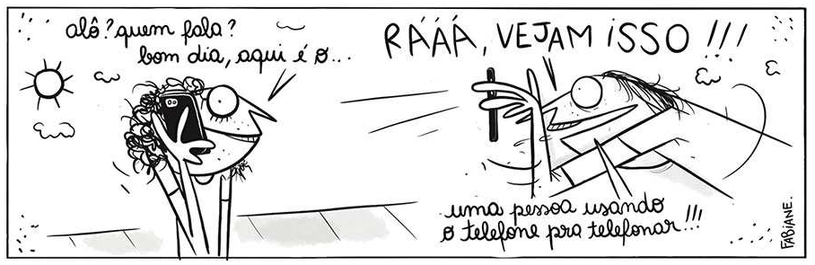

Parte 2 · Língua Portuguesa e Literatura · 36 questões reais da FGV
Na prova de Administração da FGV, o bloco de Português tem 15 questões (em geral, as questões 16 a 30). Quase metade é de literatura: a FGV traz um trecho de um romance ou um poema e faz de três a cinco perguntas sobre ele. As demais cobram gramática aplicada ao texto. A lista segue essa proporção.
90 questões de 6 provas de Administração (2022 a 2026), classificadas por tema
| Nº | Tema | Questões |
|---|---|---|
| 1 | Literatura: leitura de obras e escolas literárias | |
| 2 | Recursos expressivos e figuras de linguagem | |
| 3 | Conectivos e relações entre orações | |
| 4 | Humor, tirinhas e ambiguidade | |
| 5 | Formação de palavras | |
| 6 | Interpretação de textos não literários | |
| 7 | Sujeito e vozes verbais | |
| 8 | Vocabulário e sentido das palavras | |
| 9 | Pronomes e coesão | |
| 10 | Pontuação e aspas | |
| 11 | Regência, concordância e norma-padrão |
Provas: Vestibular Unificado FGV 2026.1 e 2024, Vestibular FGV 2026.2 e FGV‑SP 2024.2, 2023.2 e 2022 (Administração). As obras que mais apareceram foram Memórias de um sargento de milícias (duas provas) e livros de Machado de Assis (três provas). A interpretação de textos não literários exige o texto inteiro; treine-a com as provas completas.
Questões 20 a 34 · Romantismo, Realismo, Naturalismo e Modernismo
Como a FGV cobra: as perguntas misturam leitura atenta do trecho (o que o narrador sente, que recurso usa) com conhecimento da obra e da escola literária (o que ela tem de típico, com que outras obras dialoga). Leia o texto inteiro antes das questões.
Texto 1 · para as questões 20 a 24 · FGV‑SP 2024.2 · Administração
Capítulo XVI · Sucesso do plano
Para sossegarmos os leitores, que estarão sem dúvida com cuidado no mestre de cerimônias, apressamo-nos a dizer que não chegou ele a ir à cadeia; o Vidigal quis dar-lhe apenas uma amostra do pano, e depois de o ter exposto na casa da guarda por algumas horas, como já acontecera ao Leonardo, à vistoria pública, o deixou ir embora envergonhado, abatido, maldizendo a ideia que tivera de ir assistir de dentro do quarto à festa dos anos da sua amásia. Quanto ao Leonardo, não cabia em si de contente; por pouco que a sua vingança não tinha sido completa: vira o seu rival, como já a ele próprio sucedera, preso pelos granadeiros, levado à casa da guarda, sofrendo aí a vistoria dos curiosos; faltara, é verdade, a sova e os dias de cadeia, porém também ele era um simples meirinho, e o mestre de cerimônias um sacerdote respeitado, e por isso qualquer coisa bastava para feri-lo gravemente.
Além disto o mestre de cerimônias, depois de graves meditações, sabendo que ficara malvisto de seus companheiros pelo escândalo que dera, se bem que fosse certo não estar nenhum deles a tal respeito em circunstâncias de lhe atirar a primeira pedra, ouvindo um murmúrio surdo que se levantava ameaçando-o com a perda do lugar que exercia na Sé, decidiu-se a abandonar a cigana, e assim o fez. Com isto o Leonardo deu-se de todo por satisfeito, e renasceram-lhe as esperanças de conquistar o antigo posto, uma vez que o principal inimigo o tinha abandonado. A cigana, desprezada, não quereria sem dúvida ficar por muito tempo devoluta; e como ele se achava com requerimento em caixa, e contava serviços atrasados, era provável que obtivesse favorável despacho, porque também ela ainda nem sonhava que tudo o que tinha sucedido pudesse ter sido obra sua.
Manuel Antônio de Almeida, Memórias de um sargento de milícias.
20FGV‑SP 2024.2 · Administração · Questão 26questão real
O fato de que tanto o mestre de cerimônias como Leonardo (pai) sejam membros de instituições gradas (a Igreja e a Justiça, respectivamente), enquanto, ao mesmo tempo, participam de atividades ilícitas e, até, imorais, faz de ambos, no contexto do romance,
21FGV‑SP 2024.2 · Administração · Questão 27questão real
A menção ao leitor, usual no livro, que ocorre já no início do texto, será, em momento posterior (embora frequentemente usada com espírito mais crítico e provocador) recurso de emprego marcante, sobretudo na obra
22FGV‑SP 2024.2 · Administração · Questão 28questão real
Menciona-se, no texto, uma prática bastante usual das personagens do romance, que é das que mais agitam as relações entre elas. Trata-se da
23FGV‑SP 2024.2 · Administração · Questão 29questão real
Uma das marcas que sobretudo afastam as Memórias de um sargento de milícias do romance romântico mais usual e característico é o fato de que, nelas,
24FGV‑SP 2024.2 · Administração · Questão 30questão real
Os pronomes oblíquos podem substituir uma palavra e, em certos contextos, uma oração. É o que se verifica em:
Texto 2 · para as questões 25 a 28 · Vestibular FGV 2026.2
Capítulo II · Do livro
1.Agora que expliquei o título, passo a escrever o livro. Antes disso, porém, digamos os motivos que me põem a pena na mão. Vivo só, com um criado. A casa em que moro é própria; fi-la construir de propósito, levado de um desejo tão particular que me vexa imprimi-lo, mas vá lá. Um dia, há bastantes anos, lembrou-me reproduzir no Engenho Novo a casa em que me criei na antiga Rua de Mata-cavalos, dando-lhe o mesmo aspecto e economia daquela outra, que desapareceu. Construtor e pintor entenderam bem as indicações que lhes fiz: é o mesmo prédio assobradado, três janelas de frente, varanda ao fundo, as mesmas alcovas e salas. Na principal destas, a pintura do teto e das paredes é mais ou menos igual, umas grinaldas de flores miúdas e grandes pássaros que as tomam nos bicos, de espaço a espaço. Nos quatro cantos do teto as figuras das estações, e ao centro das paredes os medalhões de César, Augusto, Nero e Massinissa, com os nomes por baixo... Não alcanço a razão de tais personagens. Quando fomos para a casa de Mata-cavalos, já ela estava assim decorada; vinha do decênio anterior. Naturalmente era gosto do tempo meter sabor clássico e figuras antigas em pinturas americanas. O mais é também análogo e parecido. Tenho chacarinha, flores, legume, uma casuarina, um poço e lavadouro. Uso louça velha e mobília velha. Enfim, agora, como outrora, há aqui o mesmo contraste da vida interior, que é pacata, com a exterior, que é ruidosa.
2.O meu fim evidente era atar as duas pontas da vida, e restaurar na velhice a adolescência. Pois, senhor, não consegui recompor o que foi nem o que fui. Em tudo, se o rosto é igual, a fisionomia é diferente.
3.Entretanto, vida diferente não quer dizer vida pior; é outra coisa. A certos respeitos, aquela vida antiga aparece-me despida de muitos encantos que lhe achei; mas é também exato que perdeu muito espinho que a fez molesta, e, de memória, conservo alguma recordação doce e feiticeira. Em verdade, pouco apareço e menos falo. Distrações raras. O mais do tempo é gasto em hortar, jardinar e ler; como bem e não durmo mal.
4.Ora, como tudo cansa, esta monotonia acabou por exaurir-me também. Quis variar, e lembrou-me escrever um livro. Jurisprudência, filosofia e política acudiram-me, mas não me acudiram as forças necessárias. Depois, pensei em fazer uma História dos Subúrbios, menos seca que as memórias do padre Luís Gonçalves dos Santos, relativas à cidade; era obra modesta, mas exigia documentos e datas, como preliminares, tudo árido e longo. Foi então que os bustos pintados nas paredes entraram a falar-me e a dizer-me que, uma vez que eles não alcançavam reconstituir-me os tempos idos, pegasse da pena e contasse alguns. Talvez a narração me desse a ilusão, e as sombras viessem perpassar ligeiras, como ao poeta, não o do trem, mas o do Fausto: Aí vindes outra vez, inquietas sombras?...
5.Fiquei tão alegre com esta ideia, que ainda agora me treme a pena na mão. Sim, Nero, Augusto, Massinissa, e tu, grande César, que me incitas a fazer os meus comentários, agradeço-vos o conselho, e vou deitar ao papel as reminiscências que me vierem vindo. Deste modo, viverei o que vivi, e assentarei a mão para alguma obra de maior tomo. Eia, comecemos a evocação por uma célebre tarde de novembro, que nunca me esqueceu. Tive outras muitas, melhores, e piores, mas aquela nunca se me apagou do espírito. É o que vais entender, lendo.
Machado de Assis, Dom Casmurro.
25Vestibular FGV 2026.2 · Questão 21questão real
Os dois empreendimentos do narrador, relatados no excerto (a saber, a reprodução da casa e a escrita do livro), mantêm, com o relativo desapego e distanciamento que ele demonstra, no que tange ao seu próprio passado, uma relação de caráter, sobretudo,
26Vestibular FGV 2026.2 · Questão 22questão real
Os estudos machadianos já apontaram que um denominador comum aos quatro vultos da Antiguidade, citados no texto, é o fato de que todos exibem, em suas biografias, envolvimento ou responsabilidade direta na morte ou repúdio de esposas ou filhas, em geral tendo em vista suspeitas de adultério. Como se sabe, esse aspecto incide sobre o próprio Dom Casmurro, cujo enredo conhecidamente gira em torno de um suposto adultério.
A intencionalidade implicada nessa seleção dos vultos antigos revelaria, no processo compositivo da obra, a intervenção do
27Vestibular FGV 2026.2 · Questão 23questão real
Os índices que o narrador vai disseminando ao longo da narrativa projetam, dele, a imagem de um
28Vestibular FGV 2026.2 · Questão 24questão real
“Um dia, há bastantes anos, lembrou-me reproduzir no Engenho Novo a casa em que me criei na antiga Rua de Mata-cavalos”. (1.º parágrafo)
Antes de fazer essa declaração, o narrador confessa que se sentiu
Texto 3 · para as questões 29 a 31 · Vestibular Unificado FGV 2026.1
— Ai, o meu rico homem!
E o mugido lúgubre daquela pobre criatura abandonada antepunha à rude agitação do cortiço uma nota lamentosa e tristonha de uma vaca chamando ao longe, perdida ao cair da noite num lugar desconhecido e agreste. Mas o trabalho aquecia já de uma ponta à outra da estalagem; ria-se, cantava-se, soltava-se a língua; o formigueiro assanhava-se com as compras para o almoço; os mercadores entravam e saíam: a máquina de massas principiava a bufar. E Piedade, assentada à soleira de sua porta, paciente e ululante como um cão que espera pelo dono, maldizia a hora em que saíra da sua terra, e parecia disposta a morrer ali mesmo, naquele limiar de granito, onde ela, tantas vezes, com a cabeça encostada ao ombro do seu homem, suspirava feliz, ouvindo gemer na guitarra dele os queridos fados de além-mar.
E Jerônimo não aparecia.
Ela ergueu-se finalmente, foi lá fora ao capinzal, pôs-se a andar agitada, falando sozinha, a gesticular forte. E nos seus movimentos de desespero, quando levantava para o céu os punhos fechados, dir-se-ia que não era contra o marido que se revoltava, mas sim contra aquela amaldiçoada luz alucinadora, contra aquele sol crapuloso, que fazia ferver o sangue aos homens e metia-lhes no corpo luxúrias de bode. Parecia rebelar-se contra aquela natureza alcoviteira, que lhe roubara o seu homem para dá-lo a outra, porque a outra era gente do seu peito e ela não.
E maldizia soluçando a hora em que saíra da sua terra; essa boa terra cansada, velha como que enferma; essa boa terra tranquila, sem sobressaltos nem desvarios de juventude. Sim, lá os campos eram frios e melancólicos, de um verde alourado e quieto, e não ardentes e esmeraldinos e afogados em tanto sol e em tanto perfume como o deste inferno, onde em cada folha que se pisa há debaixo um réptil venenoso, como em cada flor que desabotoa e em cada moscardo que adeja há um vírus de lascívia.
Aluísio Azevedo, O cortiço.
29Vestibular Unificado FGV 2026.1 · Questão 28questão real
No parágrafo que se inicia com “E o mugido lúgubre (...)”, é marca bastante saliente do Naturalismo em literatura a reiterada
30Vestibular Unificado FGV 2026.1 · Questão 29questão real
Verifica-se que o texto internaliza uma doutrina bastante em voga no período em que foi escrito, a saber, o
31Vestibular Unificado FGV 2026.1 · Questão 30questão real
Em decorrência do cientificismo próprio do Naturalismo, o discurso do narrador
Texto 4 · para as questões 32 a 34 · FGV‑SP 2023.2 · Administração
O sobrevivente
Impossível compor um poema a essa altura da evolução da humanidade.
Impossível escrever um poema — uma linha que seja — de verdadeira poesia.
O último trovador morreu em 1914.
Tinha um nome de que ninguém se lembra mais.
Há máquinas terrivelmente complicadas para as necessidades mais simples.
Se quer fumar um charuto aperte um botão.
Paletós abotoam-se por eletricidade.
Amor se faz pelo sem-fio.
Não precisa estômago para digestão.
Um sábio declarou a O Jornal que ainda
falta muito para atingirmos um nível razo-
ável de cultura. Mas até lá, felizmente,
estarei morto.
Os homens não melhoraram
e matam-se como percevejos.
Os percevejos heroicos renascem.
Inabitável, o mundo é cada vez mais habitado.
E se os olhos reaprendessem a chorar seria um segundo dilúvio.
(Desconfio que escrevi um poema.)
Carlos Drummond de Andrade, Alguma poesia.
32FGV‑SP 2023.2 · Administração · Questão 25questão real
A visão do progresso configurada no poema opõe-se mais frontalmente à que se apresenta na corrente modernista do
33FGV‑SP 2023.2 · Administração · Questão 26questão real
A impossibilidade de se compor um poema, de que fala o texto, é
34FGV‑SP 2023.2 · Administração · Questão 27questão real
O poeta se vale, ao mesmo tempo, de uma metáfora e de uma hipérbole na seguinte palavra do texto:
Questões 35 a 38 · as questões citam o trecho necessário; o texto completo está na prova indicada
Figuras que a FGV já cobrou
Antítese: ideias opostas lado a lado. Eufemismo: abrandar o que é desagradável. Hipérbole: exagero. Metáfora: comparação implícita. Ironia: dizer o contrário do que se pensa. Preterição: dizer que não vai falar de algo enquanto fala. Pleonasmo sintático: dois termos com a mesma função (“Esta página, imaginamo-la”). Zeugma: omitir um termo já dito (“O Damasceno recebeu-me com palavras, a mulher [recebeu-me] com sorrisos”). Metalinguagem: o texto fala de si mesmo. Denotação × conotação: sentido literal × figurado.
35Vestibular FGV 2026.2 · Questão 17questão real
Para atribuir maior expressividade a sua argumentação, o autor recorre a ideias antitéticas no trecho:
36Vestibular Unificado FGV 2024 · 1ª fase · Questão 19questão real
O autor recorre a um eufemismo (abrandamento da expressão) no seguinte trecho do texto:
37Vestibular Unificado FGV 2024 · 1ª fase · Questão 28questão real
Pleonasmo sintático é um recurso expressivo que consiste no emprego, numa mesma frase, de dois termos para exercer a mesma função.
Esse recurso ocorre na seguinte frase do texto:
38FGV‑SP 2022 · Administração · Questão 30questão real
Zeugma é uma das formas de elipse. Consiste em fazer participar de dois ou mais enunciados um termo expresso apenas em um deles. (Celso Cunha, Gramática da Língua Portuguesa).
Serve de exemplo para essa figura de sintaxe a seguinte frase do texto:
Questões 39 a 42
Valores que mais confundem
Desde que + indicativo = tempo (“desde quando”); + subjuntivo = condição. Posto que, ainda que, ainda quando = concessão (= embora), nunca causa. Ao + infinitivo = tempo (“ao chegar” = quando chegou). Dado(a), visto que = causa. Por conseguinte, sendo assim = conclusão. Ao passo que = proporção ou contraste. Verbo no subjuntivo sem conjunção (“não fosse inútil”) = condição com o “se” omitido.
39Vestibular FGV 2026.2 · Questão 18questão real
No trecho “desde que o mundo é mundo e a arte é arte” (1.º parágrafo) o conectivo “e” liga duas orações que expressam ideia de
40FGV‑SP 2022 · Administração · Questão 29questão real
Em “Ao contemplá-lo, cobrindo casta e redondamente o joelho, foi que eu fiz uma descoberta sutil” e “A nudez habitual, dada a multiplicação das obras e dos cuidados do indivíduo, tenderia a embotar os sentidos e a retardar os sexos”, os trechos sublinhados exprimem, respectivamente, ideia de
41FGV‑SP 2023.2 · Administração · Questão 30questão real
No trecho “certo sentimento íntimo que o torne homem do seu tempo e do seu país, ainda quando trate de assuntos remotos no tempo e no espaço”, a expressão sublinhada pode ser substituída, sem prejuízo para o sentido, por:
42FGV‑SP 2024.2 · Administração · Questão 19questão real
No início do trecho “não fosse inútil imaginar que os parlamentares possam se distanciar do corporativismo que abraçam em nome da preservação dos pares” (último parágrafo), ocorre a elipse da conjunção
Questões 43 e 44 · a questão 16 de toda prova costuma ser uma tirinha ou um cartum
Recursos de humor
Pressuposto: informação implícita que a frase dá como certa. Intertextualidade: diálogo com outro texto conhecido; paródia é a intertextualidade que deforma o original para fazer rir ou criticar. Ambiguidade: duplo sentido, muitas vezes por homonímia (mesma forma, sentidos diferentes: “barata”, inseto × barato) ou por ordem das palavras. Polissemia: uma palavra com vários sentidos relacionados.
43FGV‑SP 2023.2 · Administração · Questão 16questão real
Examine a tirinha.

Fabiane Langona, Viver dói. https://www1.folha.uol.com.br/25/07/2022
Contribui decisivamente para o efeito de humor da tirinha o seguinte recurso de construção textual:
44FGV‑SP 2022 · Administração · Questão 16questão real
Examine a frase abaixo, referente a uma receita culinária.
[Imagem no enunciado: foto de panquecas com a legenda “Prepare panquecas de batata assada com queijo fácil e barata”]
Além do erro de concordância, contribui para a ambiguidade presente na frase o seguinte fato linguístico:
Questões 45 a 47
Processos
Prefixação (des + fazer). Sufixação (gerenciar + -mento). Prefixação e sufixação: os dois afixos, mas a palavra existe sem um deles (des-leal-dade: existe “lealdade”). Parassíntese: prefixo e sufixo entram juntos e nenhum pode sair (en-sabo-ar: não existe “ensabão” nem “saboar”). Derivação imprópria: mudança de classe sem mudar a forma (“o não”, “o insosso”). Sufixo -mento: forma substantivo a partir de verbo, com ideia de ação ou resultado.
45Vestibular Unificado FGV 2026.1 · Questão 27questão real
“Os vocábulos formados pela agregação simultânea de prefixo e sufixo a determinado radical chamam-se parassintéticos; a parassíntese é particularmente produtiva nos verbos.”
(Celso Cunha, Nova gramática da língua portuguesa)
Ocorre um exemplo desse processo no trecho:
46Vestibular FGV 2026.2 · Questão 28questão real
“As palavras podem mudar de classe gramatical sem sofrer modificação na forma. A este processo de enriquecimento vocabular pela mudança de classe das palavras dá-se o nome de derivação imprópria”.
https://www.aulete.com.br/, Celso Cunha, Gramática básica do português contemporâneo.
Dois exemplos desse processo ocorrem no trecho:
47FGV‑SP 2024.2 · Administração · Questão 20questão real
Contribui para a formação das palavras “gerenciamento” (7.º parágrafo) e “desvirtuamento” (último parágrafo) um sufixo formador de ________________, a partir de ____________, expressando ideia de ______________.
As lacunas devem ser corretamente preenchidas por:
Questões 48 a 50
Transposição de voz
Ativa: sujeito + verbo + objeto direto (“As memórias assaltaram os olhos”). Passiva analítica: o objeto vira sujeito, o sujeito vira agente da passiva, e o verbo vira ser + particípio no mesmo tempo (“Os olhos foram assaltados pelas memórias”). Locuções com “poder”, “dever” se mantêm (“pode ser influenciada” → “podem influenciá-la”). Sujeito posposto: vem depois do verbo (“Disso vêm as fake news”).
48Vestibular Unificado FGV 2026.1 · Questão 20questão real
Na frase “Disso vêm as fake news.” (8º parágrafo), o sujeito está posposto ao verbo. Essa mesma posição do sujeito ocorre no trecho:
49Vestibular Unificado FGV 2026.1 · Questão 21questão real
“ela pode ser profundamente influenciada por emoções” (4.º parágrafo)
Reescrita na voz ativa e mantendo seu sentido, essa frase muda para:
50FGV‑SP 2024.2 · Administração · Questão 24questão real
Se a frase “nossas memórias nos assaltaram os olhos em atropelo” for transposta para a voz passiva, deve assim ser redigida:
Questões 51 a 53
51Vestibular Unificado FGV 2024 · 1ª fase · Questão 18questão real
No trecho “arrogam-se qualidades que não possuem”, a palavra sublinhada pode ser substituída, sem prejuízo para o sentido, por:
52FGV‑SP 2023.2 · Administração · Questão 24questão real
Nas frases “mas Deus vazara em suas almas o mesmo germe do heroísmo, que nutre os grandes sentimentos” (4º. parágrafo) e “O índio a princípio parecia impressionado pela obstinação do cavalheiro” (6º. parágrafo), os termos sublinhados poderiam ser substituídos, sem prejuízo para o sentido, respectivamente, por:
53Vestibular Unificado FGV 2024 · 1ª fase · Questão 26questão real
O pronome pessoal oblíquo com valor de pronome possessivo está sublinhado na frase:
Questões 54 e 55
Regras cobradas
Vírgula: nunca entre sujeito e verbo, nem entre verbo e complemento; recomendada depois de adjunto adverbial longo ou de oração adverbial deslocados para o início. Passiva sintética (“calculam-se as mortes”): o verbo concorda com o sujeito paciente. Haver no sentido de existir é impessoal (fica no singular), mas existir concorda (“existem continuidades”). Regência: participar de, comparecer a. Depois de “talvez” anteposto, o verbo vai para o subjuntivo.
54FGV‑SP 2022 · Administração · Questão 19questão real
Nestas frases, foram introduzidas vírgulas (entre parênteses), que não constam do texto. A única NÃO recomendada pela norma-padrão ocorre em:
55FGV‑SP 2023.2 · Administração · Questão 19questão real
Dentre as alterações propostas para os trechos sublinhados, a única que está correta é: